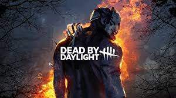
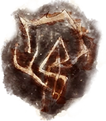

En los rincones más oscuros del mundo, personas comunes y corrientes desaparecen sin dejar rastro, tragadas por una niebla misteriosa e inexplicable. Han sido arrastradas a un reino de pesadilla donde no existe el descanso. En esta realidad distorsionada, se lleva a cabo un macabro juego de supervivencia de uno contra cuatro: un asesino implacable debe cazar y colgar en ganchos de sacrificio a cuatro supervivientes. Mientras el cazador busca alimentar a una fuerza oscura oculta en las sombras, los supervivientes deben cooperar contrarreloj para reparar cinco generadores viejos y abrir las puertas que les permitan escapar de una muerte segura... aunque solo sea hasta la próxima partida.

La Entidad es una fuerza cósmica, malévola e inmortal que viaja a través del cosmos consumiendo mundos enteros. No posee una forma física real en nuestro universo, sino que se manifiesta en sus reinos a través de gigantescas garras oscuras y apéndices negros puntiagudos que recuerdan a las patas de una araña gigante. Esta deidad se alimenta puramente de las emociones humanas más intensas: la esperanza, el miedo, el dolor y la desesperación. Para saciar su hambre infinita, secuestra a asesinos y supervivientes de diferentes épocas y realidades, atrapándolos en bucles infinitos de sufrimiento donde la muerte no es una escapatoria, sino el reinicio del ciclo.
Domina el mapa utilizando las mecánicas avanzadas de caza para sacrificar a las víctimas.
Aprende a seguir las marcas de arañazos y charcos de sangre eficientemente.
Cómo engañar al superviviente en las ventanas y palets tapando tu luz roja.
Administra tus tiempos para patrullar los generadores más cercanos.
Trabaja en equipo, optimiza el tiempo de reparación y burla al asesino.
Reparar de forma eficiente para evitar que el asesino defienda los últimos tres motores.
Cómo encadenar estructuras, palets y ventanas para ganar el máximo tiempo posible.
Cuándo descolgar de forma segura y cómo aplicar presión curando a tus compañeros.